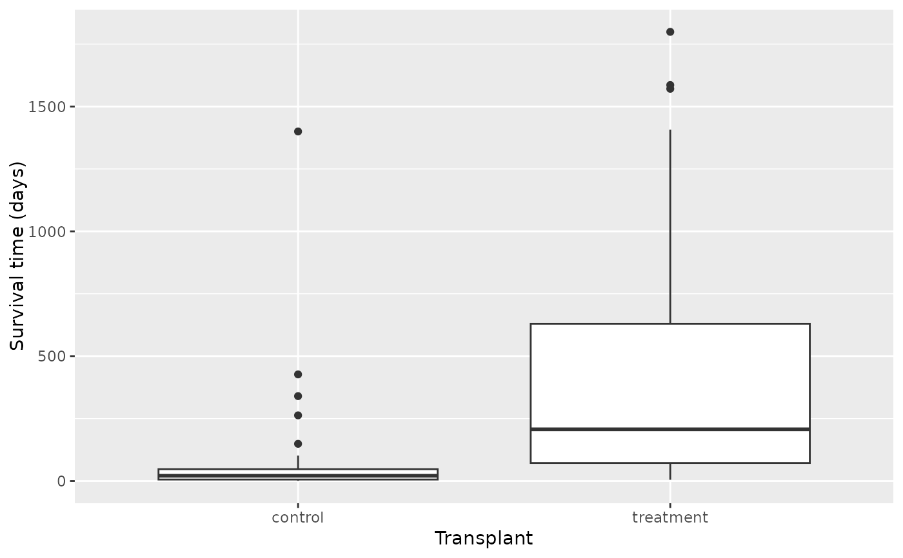

The Stanford University Heart Transplant Study was conducted to determine whether an experimental heart transplant program increased lifespan. Each patient entering the program was designated officially a heart transplant candidate, meaning that he was gravely ill and would most likely benefit from a new heart. Then the actual heart transplant occurs between a few weeks to several months depending on the availability of a donor. Very few candidates during this waiting period show improvement and get deselected as a heart transplant candidate, but for the purposes of this experiment those patients were kept in the data as continuing candidates.
heart_transplant
Format
A data frame with 103 observations on the following 8 variables.
- id
ID number of the patient.
- acceptyear
Year of acceptance as a heart transplant candidate.
- age
Age of the patient at the beginning of the study.
- survived
Survival status with levels
aliveanddead.- survtime
Number of days patients were alive after the date they were determined to be a candidate for a heart transplant until the termination date of the study
- prior
Whether or not the patient had prior surgery with levels
yesandno.- transplant
Transplant status with levels
control(did not receive a transplant) andtreatment(received a transplant).- wait
Waiting Time for Transplant
Source
http://www.stat.ucla.edu/~jsanchez/data/stanford.txt
References
Turnbull B, Brown B, and Hu M (1974). "Survivorship of heart transplant data." Journal of the American Statistical Association, vol. 69, pp. 74-80.
Examples
library(ggplot2) ggplot(heart_transplant, aes(x = transplant, y = survtime)) + geom_boxplot() + labs(x = "Transplant", y = "Survival time (days)")ggplot(heart_transplant, aes(x = transplant, fill = survived)) + geom_bar(position = "fill") + labs(x = "Transplant", y = "Proportion", fill = "Outcome")